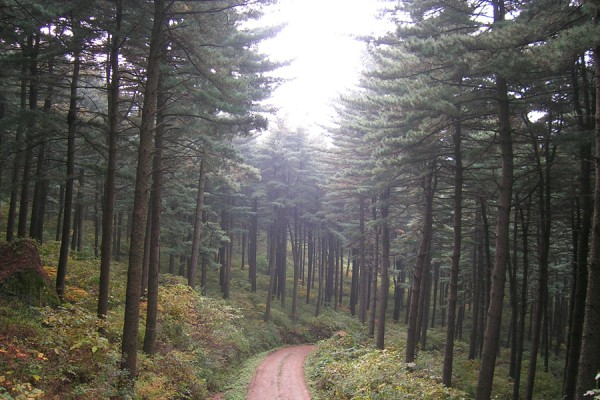

떠나고 싶을 때 떠나 자
떠나 자
Twitter
Facebook
Instagram
가평 - 잣향기푸른숲

경기도잣향기푸른숲은 수령 80년 이상의 잣나무림이 국내 최대로 분포하고 있으며, 피톤치드 가득한 쾌적한 잣나무숲에서 숲체험과 산림치유 프로그램을 복합적으로 체험할 수 있는 특별한 산림휴양 공간입니다.
피톤치드란 나무로부터 방산되어 주위의 미생물 등을 죽이는 작용을 하는 물질, 나무의 향기 성분인 테르펜류가 이에 해당한다고 봄. 산림욕의 효용의 근원이라고 합니다.
Menu
메인 홈
경치좋은 여행지
제주도 - 섬지코지
춘천 - 남이섬
가장 아름다운 성당
걷기좋은 여행지
강원도 - 원대리 자작나무숲
가평 - 축령산 잣향기푸른숲
제주 올레길